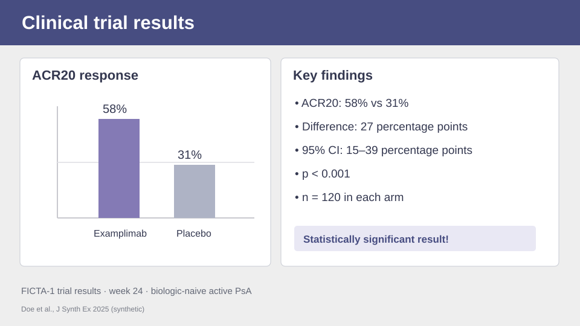
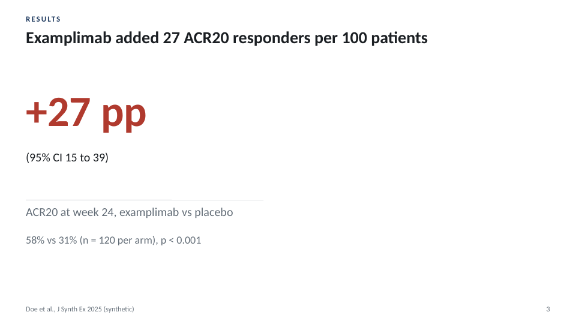

Build a scientific talk
Agent-guided intake, source-aware storyboard, approval gate, editable PowerPoint, render check and quality report.
Open-source Agent Skill Public pilot
Start with your own notes and sources. Shape a story you can defend, approve its storyboard, then make an editable PowerPoint with the evidence trail still visible.
For Codex desktop, Claude Cowork, or Claude Code with local file and terminal access.
The message before the slide
Deliver the primary result with its uncertainty.
58% vs 31% at week 24; 95% CI for the difference: 15 to 39 percentage points. Fictional FICTA-1, Table 2.
01 / See the difference
Same invented data. A clearer claim, visible uncertainty, and a source trail. Move the slider to compare the illustrative starting slide with a real render from the synthetic FICTA-1 demo.


The “before” slide is an illustration made for this site. The “after” slide is an actual render from the FICTA-1 demo. FICTA-1, its paper, and every result shown here are fictional. This comparison demonstrates visual communication, not scientific verification.
02 / From evidence to story
The skill works with your agent through a sequence of decisions you can inspect. It does not turn a paper straight into a finished deck.
Begin with your notes or outline, your audience and the point you need to make. A short interview fills in what is missing.
Connect statements and numbers to exact source locations. Open questions and expert review stay visible.
Read a slide-by-slide storyboard first. No proposed slide is rendered until you explicitly approve it.
Get editable PowerPoint slides, a contact sheet and a quality report. Review the science and visual result yourself.
03 / Built for research
Academic Presenting keeps its checks legible: what the software can verify, what the agent has checked against a source, and what still needs an expert.
Structure, references and selected number checks pass automated rules.
A claim is tied to a checked source and an exact locator.
Uncertain interpretation stays marked for the presenter.
04 / Pilot status
The public pilot is a working PowerPoint path. Some features are still being developed; the labels below describe this public release.
Agent-guided intake, source-aware storyboard, approval gate, editable PowerPoint, render check and quality report.
Local PowerPoint template handling works for a limited set of layouts. Inspect the rendered output before presenting.
HTML presentations, redesign of existing decks and rehearsal support are not in this public pilot.
Start with one small talk
Open the public pilot, paste the start prompt into an agent with local file access, and begin with your own material. The website has no upload form.